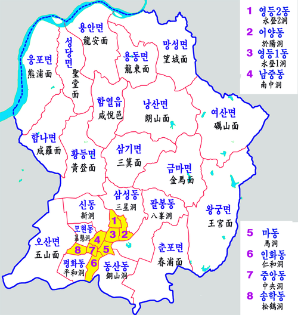

익산시(益山)
익산시는 대한민국 전라북도 서북부에 있는 시이다. 호남선과 전라선, 장항선 철도가 분기하며, 호남고속도로와 새만금포항고속도로가 지나는 호남 지방 교통의 관문이다. 호남 지방을 관할하는 익산지방국토관리청과 한국철도공사 전북본부가 위치한다. 서쪽으로 군산시, 동쪽으로 완주군, 남쪽으로 김제시와 전주시, 북쪽으로 충청남도 논산시, 부여군(금강이 경계)과 접한다.
익산시의 도심은 옛 이리시를 중심으로 형성되어 있다. 금마면에는 백제시대 문화재인 미륵사지가 있고, 고구려 부흥운동의 한반도 남부 중심지로 고구려를 계승한 보덕국(報德國)의 수도이기도 하였다. 왕궁면 일대에는 국가식품클러스터가 조성되고 있다. 고등교육기관으로는 원광대학교와 전북대학교 특성화캠퍼스가 있다. 시청은 남중동에 있고, 행정 구역은 1읍 14면 14동이다.
Back

CSS